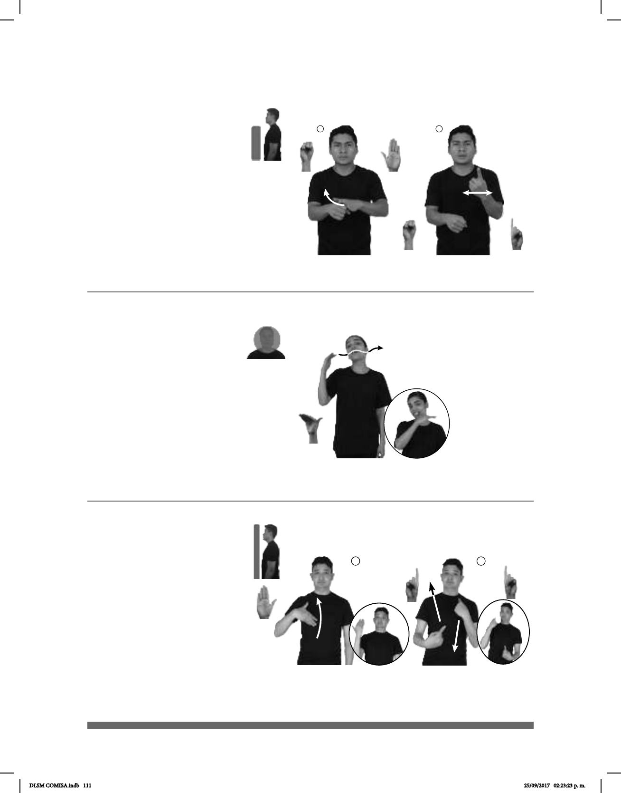

111
¿Qué onda? (B-P 2)
1 2
¿Y eso? (B-P 3)
¿Por qué? (B-P 1)
_________________________o.i.p._
pro-TÚ LLEGAR TARDE POR QUÉ
¿Por qué llegaste tarde?
______o.i.g ____o.i.g
- HOLA CÓMO-ESTAR - BIEN QUÉ-ONDA
-Hola, ¿cómo estás? -Muy bien, ¿qué onda?
__o.i.g ____o.i.p._
Y-ESO, QUÉ-PASO
¿Y eso? ¿Qué te pasó?
Seña: SB
MD seña que pasa de B-P.2
a 1.1, MB S.1
MD la palma inicia hacia
abajo y termina hacia arriba, MB palma
hacia afuera.
La MD inicia sobre MB y
termina a la altura de los hombros; MB a la
altura del pecho.
MD recto y después la mano
se agita.
Ceño fruncido, boca
semiabierta.
loc. adv. Por cuál razón, causa o
motivo.
Seña: SM
B-P.7
Palma hacia abajo.
A la altura de la nariz,
del lado derecho al izquierdo.
La mano sigue
una trayectoria ondulada.
Cabeza
inclinada, se esboza una sonrisa.
loc. adv. Frase coloquial
para preguntar a nuestro interlocutor
cómo está.
Seña: SC: I. SM; II. SB
I. B-P.2; II. MD y MB 1.1
I. y II. Palmas hacia adentro.
I. La mano inicia sobre el pecho
y se desliza hacia enfrente; II. Del pecho
al rostro.
I. La mano se mueve
formando un arco; II. MD y MB recto
alternadamente.
Cejas hacia arriba,
comisuras de los labios ligeramente hacia
abajo.
loc. adv. Frase coloquial para
preguntar a nuestro interlocutor por qué
razón ocurre alguna situación.
La seña se emplea después
de una ofensa como respuesta.
DLSM COMISA.indb 111 25/09/2017 02:23:23 p. m.